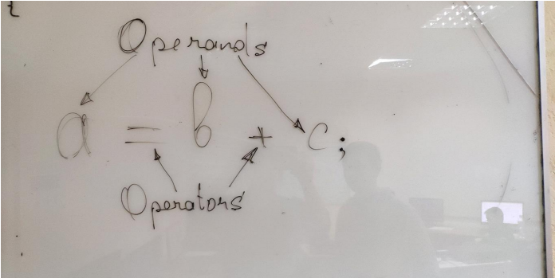
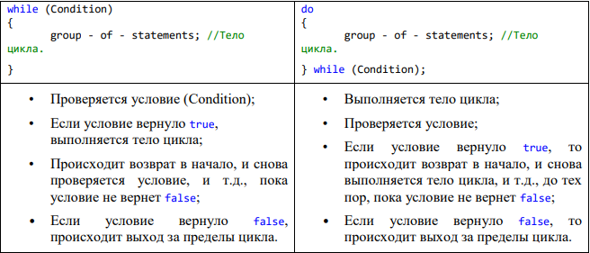

short.Переменная типа short занимает 2 Байта памяти, и принимает значения в диапазоне
unsigned short: 0…65 535; 0000 0000 0000 0000 .......... 1111 1111 1111
0…216–1;
signed short: –32 768 … 32 767;
-215 … +215 –1;
long – занимает 4 Байта памяти, и принимает значения в диапазоне
unsigned long: 0 … 4 294 967 295;
0 … 232 -1;
signed long: – 2 147 483 648 … 2 147 483 647;
–231 … 231 –1;
Вещественные типы предназначены для хранения дробных чисел, (чисел с плавающей запятой). Вещественные типы есть только знаковые, они не могут быть unsigned. В языке C++ есть всего два вещественных типа: float и double. float – вещественный тип одинарной точности, занимает 4 Байта памяти. double – вещественный тип двойной точности, занимает 8 Байт памяти. float и double могут хранить ОЧЕНЬ БОЛЬШИЕ и ОЧЕНЬ МАЛЕНЬКИЕ числа, но эти числа могут быть не совсем точными.
Разделителем целой и дробной части у float и double является точка, а не запятая.
Объем занимаемой памяти переменной, константой или типом данных всегда можно определить оператором
count
или
count
Минимальное и максимальное значение для любого типа можно узнать при помощи
макроопределений Visual Studio. Например, INT_MIN возвращает минимальное значение,
которое можно записать в int, а INT_MAX – максимальное значение. У любой беззнаковой
переменной минимальное значение всегда 0, а максимальное, например для int-a можно
узнать при помощи UINT_MAX. U означает unsigned.
Д.З.: при помощи оператора sizeof и макроопределений вывести на экран объем занимаемой
памяти для все числовых типов данных. Макроопределения можно найти в файлах "limits.h"
и "float.h", эти фалы можно открыть любым текстовым редактором.
Имя переменной нужно для того, чтобы к ней можно было обращаться по этому имени. К
переменной обращаются для того, чтобы сохранить в ней какое-то значение, а потом
использовать это значение. Когда мы сохраняем значение, мы обращаемся к переменной "на
запись", а когда смотрим какое в ней значение, то обращаемся на чтение. В процессе
компиляции имена переменных преобразуются в адреса памяти.
Для именования переменных используются идентификаторы (identifiers) составленные по определенным правилам. Идентификатор(identifier) – это имя.
Имя переменной (identifier) может состоять из символов латинского алфавита, строчных и ЗАГЛАВНЫХ, символов цифр 0123456789 и символа подчеркивания _; ABC....Zabc...z0123...9_
Имя переменной (identifier) НЕ может начинаться символом цифры (1stPlace, Place1);
Имена переменных регистрозависимы, то есть строчные и ЗАГЛАВНЫЕ символы различаются компилятором. Например double Price; и double price; это две разные переменные;
Для именования переменных НЕЛЬЗЯ использовать ключевые слова языка C++ (
Имя переменной должно быть осмысленным, то есть, по имени переменной должно становиться понятно, что в ней хранится!!! Например, переменная double Weight; содержит вес чего-либо.
Константа – это именованная область памяти, содержимое которой НЕ может изменяться в процессе выполнения программы.
Для того, чтобы из переменной сделать константу, перед ее объявлением нужно написать ключевое слово
int speed = 0; //Скорость (переменное значение)
const int MAX_SPEED = 250; //Максимальная скорость (постоянное значение)
Константы принято называть заглавными буквами, для того чтобы после объявления было понятно, что это константа.
Кроме именованных констант существуют так же символьные, строковые и числовые константы.
Символьная константа – это один единственный символ, заключенный в одинарные кавычки (' '), например '+' или 'A'. Символьные константы – это константы типа char. Это легко проверить следующим образом:
cout << '+' << endl;
cout << sizeof(char) << endl;
cout << sizeof('+') << endl;
cout << typeid('+').name() << endl;
Строковая константа – это сколько угодно, каких угодно символов, заключенных в двойные кавычки "", например – "Hello World" или "+". Строковые константы заниамют на 1 байт больше, чем содержат символов, это связано с тем, что компилятор неявно добавляет ASCII-символ с кодом 0 в конец строки. Это легко проверить следующим образом:
cout << "Строковые константы:\n";
cout << "Hello World" << endl;
cout << sizeof("Hello World") << endl;
cout << "+" << endl;
cout << sizeof("+") << endl;
Числовая константа – это просто число в исходном коде программы. Оно может быть целым, или дробным, например:
cout << 1024 << endl;
cout <<
cout <<
НО, у каждого значения (переменной, константы) в языке C++ есть тип. 1024 – это числовая
константа типа
cout << 3.14 << endl;
cout << 5. << endl;
cout << 5.f << endl;
cout << 123ll << endl;
cout << 123ull << endl;
Числовые, символьные и строковые константы еще называют литералами.
Программа на языке C++ состоит из выражений, каждое из которых заканчивается символом ';'.
Выражение (Expression) – это синтаксическая конструкция, состоящая из операндов и операторов.
Операнды – это объекты (элементы выражения), над которыми выполняется какое-то действие. В качестве операндов в выражениях обычно выступают переменные и константы.
Операторы – это объекты (элементы выражения), которые показывают, какое действие нужно выполнить над операндами. Операторы обозначаются одним или двумя специальными символами.

Операторы бывают: унарные, бинарные и тернарные. Унарные операторы выполняют
действие над одним операндом, бинарные могут работать только с двумя операндами, а
тернарные только с тремя операндами. Например -3 здесь оператор
Все операторы языка C++ можно разделить на категории:
Арифметические операторы (Arithmetical operators):
Unary: + –;
Binary: + – * / %;
% — остаток от деления. Об этом операторе нужно знать две особенности:
Если делимое меньше делителя, то оно полностью выпадает в остаток
Оператор присваивания (Assignment operator =). Переменной слева, присваивает
значение выражения справа. Присвоить значит записать (сохранить) в память.
Переменную слева еще называют l-value, а выражение справа r-value.
int b = a;
int c = (a + b) * 2;
У инкремента и декремента есть две формы записи – префиксная и постфиксная. В
префиксной форме записи оператор пишется перед операндом, а в постфиксной –
после операнда:
Можно сказать, что у префиксных инкремента и декремента САМЫЙ ВЫСОКИЙ
ПРИОРИТЕТ, а у постфиксных САМЫЙ низкий ПРИОРИТЕТ, то есть они
выполняются в последнюю очередь в любом выражении.
OR – Результатом сложного условия будет true, если результат хотя бы одного
простого условия – true. Логическое OR напоминает арифметическое сложение 1 и 0.
false || false || true = true;
0 + 0 + 1 = 1; //true
0 + 1 + 1 = 2; //true
0 + 0 + 0 = 0; //false
AND – Результатом сложного условия будет false, если результат хотя бы одного простого условия – false;
Логическое AND напоминает арифметическое умножение 1 и 0.
1*1*1 = 1;//true
1*1*0 = 0;//false
0*1*1 = 0;//false
Конструкции ветвления:
Циклы:
Если условие вернуло true, то выполняется code1, в противном случае, выполняется code2.
else и code2 являются не обязательными, то есть, if можно написать так:
Условие, состоящее из одной операции сравнения, называют простым. Несколько простых условий можно объединить в сложное, при помощи логических операторов (&& – AND, || – OR).
var – это переменная, по значению которой
Слово
Цикл – это управляющая структура, которая позволяет многократно выполнить определенную часть кода (многократно повторить выполнение определенной части кода).
Цикл – это управляющая структура, которая позволяет зациклить выполнение определенной части кода.
Циклы бывают:
Итерация – это однократное выполнение тела цикла.
Тело цикла – это код, который нужно зациклить.

Основным отличием между